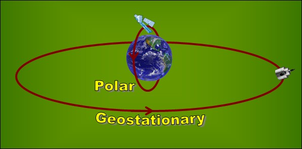

A satellite is launched (lifted) from the Earth's surface by a rocket. Once the satellite reaches its orbit, it continues to move in
its orbit and does not require the push from the rocket any more. Satellite orbits can be at different distances from the Earth. Two important types of orbits are:
Geostationary orbits
are in the same plane as the equator and are about 35000 km away from the Earth.
Polar orbits
pass very close to the north and south poles (also known as near-polar orbits). They are about 700 to 800 km away from the Earth.

Depending on their use there are different kinds of satellites.
Communication satellites
help to provide radio, television and phone coverage. These satellites always look at the same point on the Earth as they revolve around the Earth (geostationary).
Some
weather satellites
are geostationary. Others are in polar orbit. They all provide information that is used for weather forecast.
Navigational satellites
are special satellites that help us to find our exact location on the Earth. GPS (Global Positioning Systems) receivers that you can now buy at many stores use these satellites to show us our location.
Satellites for planetary/astronomical studies
point away from the Earth and are used to study outer space and other planets.
Earth observing satellites
are specially designed to study the processes on Earth. Many of these satellites occupy near-polar orbits. Some also operate in other orbit types.